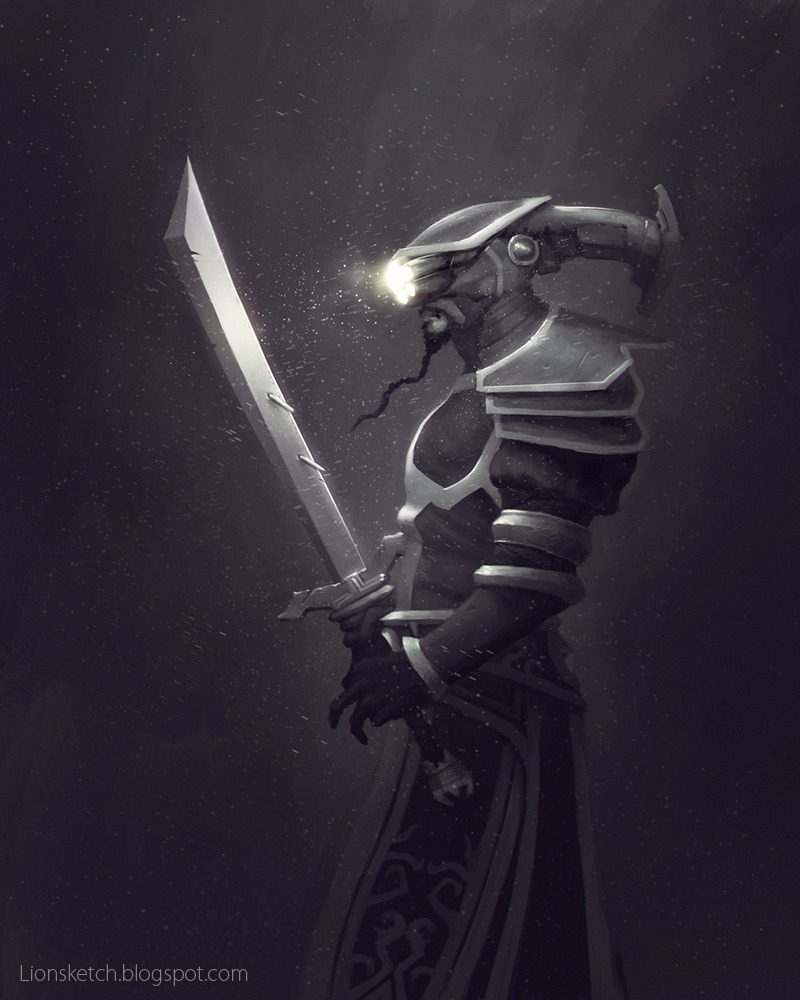
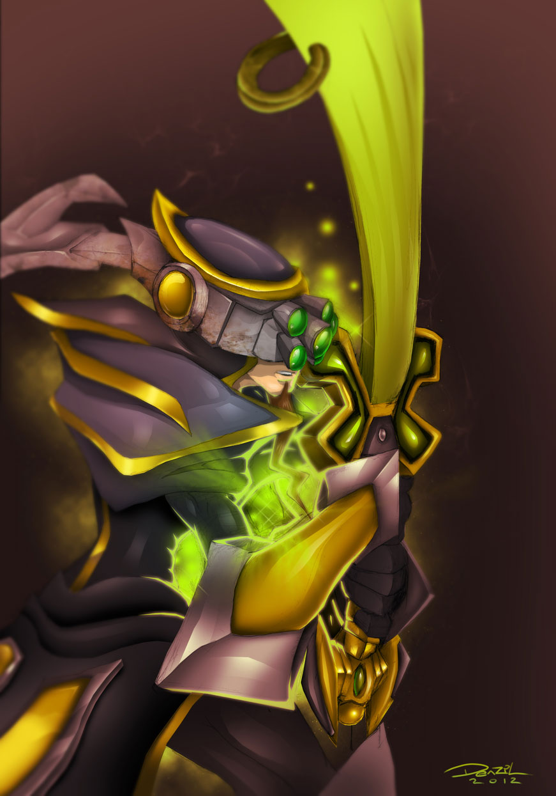
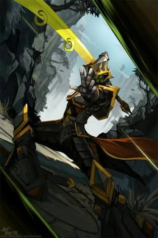
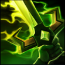
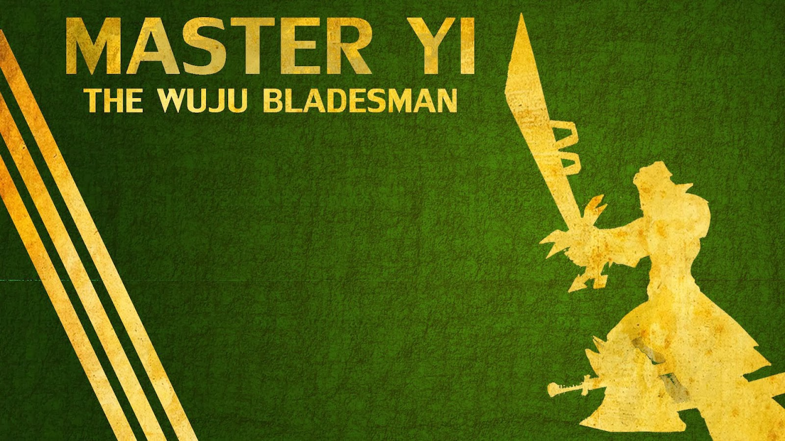

Master yi is a League of Legend champion which have a different playstyle and role. He have a unique playstyle because his abilities and mechanics are very different from other champions. Yi can be played as an assassin, brusier, frontliner and tank depending on the situation. Master yi is known as right-click champion. But he has a lot of mechanics that would allow you to get more familiar with it as you play with it. An above average Yi player can easily carry the matches on his own and climb the ladder quickly at low elo. Playing Yi in high elo is an art in itself. An expert Yi can deal 1v3 situations easily with using all mechanics of the champion. Yi has a very high potential for split-pushing because he can quickly clean up minion waves and very powerful at duels. Let's have a look at Yi's abilities.
P - Double Strike
- After landing 3 basic attacks, Master Yi's next attack within 4 seconds strikes twice, dealing 50% AD bonus physical damage which applies on-hit effects and can critically strike.
- Your damage is greatly increased by your attack speed. This is what makes Yi attack speed dependent. When used with true damage and Guinsoo's passive it can be a really deadly passive.
Q - Alpha Strike
- Master Yi becomes untargetable and jumps to up to 4 nearby enemies dealing damage to each unit and bonus damage to minions and monsters.
- This skill can critically strike.
- Basic attacks lower alpha strike's cooldown by 1 second.
- Alpha Strike is what makes master yi master yi. You can dodge or suppress almost all abilities in League of Legends(except DoT ones). Yi can dodge TF stun, Sejuani ult, Karthus ult, Zed ult , even Lee Sin's 2nd Q.
- Is it over? Nope. You can follow flashes, dashes and blinks with alpha strike too. But you have to time it really well.
- Try to use alpha strike while your opponent is dying.
W - Meditate
- Master Yi channels for 4 seconds, restoring health. While channeling, Master Yi gains damage reduction.
- You can tank turret shots, reduce burst damage on you and reset your attack timer. You can tank for 4 seconds for your team and survive most bad situations.
E - Wuju Style
- Passive: Increases Master Yi's bonus attack damage by 10%.
- Active: Master Yi's basic attacks deal bonus true damage for 5 seconds.
- Attack speed + double strike + wuju style allows you to melt tanks at the same speed as squishies.

R - Highlander
- Passive: Champion kills and assists reduce the cooldowns of Master Yi's other abilities by 70%.
- Active: For 7 seconds, Master Yi gains movement speed and attack speed and becomes immune to any slows. While active, kills and assists extend the duration by 7 seconds.
- This is the funniest ultimate ability in League of Legends. Teemo mushrooms, Singed glue, even Nasus W can't slow you. You are faster than everybody. But if you can't kill anybody in 7 seconds, you are useless auto-attacking champion for 85 seconds
